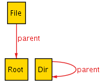

Our first Alloy model is located in the upper-righthand frame. It is a short model of a file system.
Alloy models can contain comments by beginning a line with the character sequence "//".
// A file system object in the file system
There are actually three different formats for writing comments in Alloy, all reminiscent of other programming languages.
After the comment, comes our first signature declaration, "sig FSObject". It defines a set named FSObject, representing the set of all file system objects (both directories and files) in the file system.
sig FSObject {
parent: lone Dir
}
Following the signature declaration is its body, surrounded by curly braces. Here we can define relations that have this signature as their domain. Relations defined here behave like fields of an object in the OO paradigm.
For instance, in the FSObject signature body, we define a relation called parent which relates FSObjects to Dirs (directories). Just think of this as saying that each file system object has a parent field which is a Dir. The keyword lone simply indicates that there are 0 or 1 parent dir for each FSObject. That is, not every file system object has a parent.
You can read more about how you can read Alloy as if it were an Object Oriented language, like Java or C++. However, while the OO metaphore is useful, a deeper (but still intuitive) set theoretic understanding will eventually be required, an interested readers may like to know how Alloy really works behind the scenes.
The signatures Dir and Root are defined later in the model; the order in which we define the signatures is irrelevant. In fact, more generally, the order of paragraphs (statements) in an Alloy model does not affect its meaning. This is in the spirit of being declarative rather than imperative -- all the statements and constraints must hold, but there is no notion of an order or sequence to them.
The signatures Dir and File represent the directories and files in the file system:
// A directory in the file system sig Dir extends FSObject { contents: set FSObject } and later,
// A file in the file system sig File extends FSObject { }
Both declarations end in "extends FSObject", indicating that files and directories are subtypes of file system objects. This means two things: (1) the set of all Files is a subset of the set of all FSObjects, and (2) Files are disjoint from other subtypes of FSObject (ie it is disjoint from Dir). Anything we can do to a FSObject can also be done to a File or a Dir.
You may wish to read about other options for signatures.
It is not enough to simply define directories and files as we did above. We also need to add some basic sanity constraints to make sure they behave the way we intuitively expect. For example, the offhand parent and contents fields need not bear any particular relation to one another. Of course, when we added those fields we had a very specific constraint in mind: a directory is the parent of its contents. So, we need to write the following constraint to limit the behaviour of our model:
// A directory is the parent of its contents fact { all d: Dir, o: d.contents | o.parent = d }
In words: "Given any directory d and any (FSObject) o in d's contents, d must be the parent of o.". You may wish to look over some equivalent ways of writing this fact.
Had we omitted this fact, then we could have gotten situations like this:

There are many parent relationships among the objects, but no contents relationships!
Upon seeing such an absurd example, we would have realized that we forgot a sanity constraint or two. We will describe the process of debugging your model later; for now, let's keep looking at how to write one in the first place.
Alloy supports several quantifiers including the standard universal ("for all...") and existential ("there exists...") quantifiers.
A fact statement in Alloy puts an explicit constraint (or list of constraints) on the model. When Alloy searches for examples, it discards any which violate any fact. Thus, if the fact is trivially false, then you will simply get no examples of file systems (but won't be told that the model is inconsistent). Later we will see the 'run' command which helps make sure that you have neither overconstrained the model nor underconstrained it.
In some sense, facts are "always on"; all facts automatically always apply. Later, we will see functions and predicates , which can serve as 'optional facts', allowing you to say things like "if constraint A holds then constraint B must hold.".
Here we see the '.' operator used for the first time. Technically, the '.' operator is "relation composition" (relational join), but due to some clever definitions of Alloy syntax it also serves to access the fields of a signature.
By declaring the signatures Dir and File to be extend FSObject, we ensured that no FSObject is both a File and a Dir. However, we have not excluded the possibility of some FSObject being neither. The following fact does so:
// All file system objects are either files or directories fact { File + Dir = FSObject }
Another way to enforce that constraint would be to mark FSObject as abstract, by writing
abstract sig FSObject {...}
An abstract signature only contains atoms which are also contained in one of its extending signatures. Exception: if there are no extending signatures, then the abstract keyword is ignored.
The "+" indicates set union. Thus this fact reads "the union of all files and all directories is the same thing as set of all file system objects". In other words, "File and Dir partition FSObject"; there is no FSObject which is neither a File nor a Directory. Alloy supports other standard set operations (such as intersection and difference).
We still need to address the root directory of the file system. We do so by creating a new signature, Root, which extends Dir. Since it is marked one, there will always be exactly one instance of it. In the "appended fact" (in braces after the signature body), we constrain the root to have no parent.
// There exists a root
one sig Root extends Dir { } { no parent }
Of course, we could have avoided using the one keyword and the appended fact syntax by writing appropriate additional facts to constrain the model. There are a couple of alternatives to using one and and appended fact, although they are not as concise.
We will now add our last "sanity" constraint, which makes sure that the file system is connected. After doing that, we will be ready to run the Alloy analyzer and check some assertions about the model.
// File system is connected fact { FSObject in Root.*contents }
In Alloy, in can be read as "subset of" (among other things). The operator "*" denotes reflexive transitive closure. Thus, this fact says that the set of all file system objects is a subset of everything reachable from the Root by following the contents relation zero or more times.
Note that it is important that we use the reflexive transitive closure, since Root doesn't contain itself directly or indirectly but is part of the file system.
Had we omitted this fact, we would get erroneous file systems such as this one:
So far, we have described the basic structure of a file system using sig declarations and have added some simple sanity constraints using fact statements. Now we are ready to reap the fruits of our labor by checking some properties of our model. We will write assert statements in a manner very similar to how we wrote fact statements, and then use the check command to tell Alloy to automatically search for counter examples to our assertions.
A fact forces something to be true of the model. An assert claims that something must be true due to the behaviour of the model.
// The contents path is acyclic assert acyclic { no d: Dir | d in d.^contents }
There is no directory which contains itself (directly or indirectly). That is, the containment relation among directories has no cycles. We express this constraint in Alloy using (non-reflective) transitive closure, denoted "^".
Note that we do not want to use reflexive transitive closure (like we did before) -- if you follow the contents relation zero times you get back the same directory, making the assertion trivially false!
Next we check our assertion by searching for counterexamples (and hopefully finding none). We have to choose a finite scope for Alloy to search within, so we choose 5. That is, Alloy will examine all file systems with up to 5 FSObjects, and try to find one that violates the acyclic assertion. In general, saying "for 5", means that Alloy will examine all examples whose top level signatures (those that don't extend other signatures) have up to 5 instances. You can also say "for exactly 5" if you don't want to examine scopes smaller than 5.
check acyclic for 5
When a
In the next lesson, the Alloy walkthrough, you will get a chance to try running check statements yourself and visualizing counterexamples. For now, trust us that no counterexamples were found. In fact, it holds for any scope, but Alloy only guarantees that it holds for up to a scope of 5.
You should think for a moment about why it is that this particular assertion holds. Once you have thought about it, you can look at our intuitive explanation.
Next we write another assertion and check it, much like the last one. This time, we are checking that there is only one Root directory, and that every FSObject is in at most one directory. We use a scope of 5 for both checks.
// File system has one root assert oneRoot { one d: Dir | no d.parent } check oneRoot for 5 // Every fsobject is in at most one directory assert oneLocation { all o: FSObject | lone d: Dir | o in d.contents } check oneLocation for 5
Here we encountered the one and lone quantifiers for the first time. The one quantifier means "exactly one", and the lone quantifier means "zero or one" (you can think of it as 'less than or equal to one). You may wish to read more about these and other quantifiers.
We could have written these (or any other assertions) as facts, but then they would be redundant (if they hold) or potentially masking an important counterexample (if they don't hold). It is always better to check properties rather than redundantly forcing them to be true. If you don't understand why something does (or does not) follow from the model, then you don't understand your subject matter enough. One of the benefits of modeling (especially declarative modeling) is that it provides a relatively painless way to develop such an understanding, along with checking things you might otherwise have taken for granted.
Before proceeding to Lesson II of the File System example, let's take a look at the Alloy interface itself. We will walkthrough the basics of how to execute a command to check an Alloy model and how to interpret the results. We will do all of these in the context of the first (our current) File System model, focussing on checking the two assertions we made.